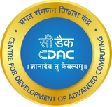

Project Engineer · R&D
CDAC Chennai
Design and verification of a biometric-enabled indigenous FIDO2 authenticator
// rtl & architecture
- Designed a hardware crypto engine in Verilog integrating SHA-256, HMAC, AES (GCM/ECB/CBC/CTR) and ECDSA.
- Implemented post-quantum algorithms ML-KEM and ML-DSA in the crypto engines.
- Packaged RTL as Vivado IP and integrated AXI, UART, GPIO, timers and memory.
// verification
- Built a UVM environment with SVA, scoreboards and functional coverage.
- Verified AXI / AXI4-Stream with constrained-random tests and reached coverage closure.
- Ran HW–SW co-verification of the core on a RISC-V SoC.
// fpga & system
- FPGA synthesis, static timing analysis and on-board validation.
- Integrated a GT521F32 fingerprint sensor for biometric authentication.
- Built and deployed the relying-party and FIDO2 server, with a web interface for authenticator testing.
- Verilog
- SystemVerilog
- UVM
- SVA
- AXI4
- Vivado
- STA
- RISC-V
- FIDO2
- PQC